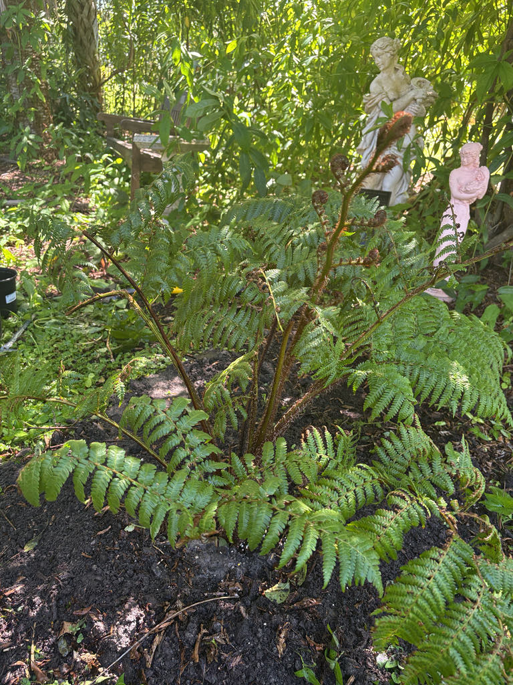

- This is the fastest-growing tree fern in cultivation — under warm, humid conditions it can add one to two feet of trunk height in a single year, a rate that leaves most other tree ferns far behind.
- The pale oval marks climbing the trunk are not damage. Each one is a 'coin spot' — the clean, round scar left behind when an old frond naturally sheds. The pattern spirals up the trunk as the plant grows.
- Ferns don't flower and they don't set seed. This one reproduces entirely by spores — microscopic dust-sized particles shed from the undersides of mature fronds. A single plant produces them by the millions, and wind can carry them more than seven miles from the parent.
- The species name honors Sir Daniel Cooper (1821–1902), a Sydney politician who bankrolled multiple botanical collecting expeditions across Australia. Ferdinand von Mueller named the fern after him in 1857 — a thank-you note written in Latin that has lasted 170 years.
Sphaeropteris cooperi is native to the subtropical rainforests and wet gullies of eastern Australia, specifically Queensland and New South Wales, where it grows as an understory plant along stream margins and in sheltered coastal forest. It is common and widespread in its home range, occurring in rainforest remnants, regrowth forest, and even urban bushland.
It arrived in Florida cultivation as a tropical ornamental and is recommended by UF/IFAS for landscapes in USDA Hardiness Zones 10B through 11. Outside Florida, the species has naturalized in Hawaii, New Zealand, South Africa, the Azores, and several island groups, where its prolific spore production has made it an invasive concern — though that story has not played out in Florida's climate.
- The genus name Sphaeropteris comes from the Greek for 'globe fern,' a reference to the rounded, globe-like shape of the spore clusters (sori) on the underside of the fronds. The species epithet cooperi honors Sir Daniel Cooper, a prominent 19th-century Sydney politician who funded botanical collecting expeditions across Australia.
- Ferdinand von Mueller, the Government Botanist of Victoria, formally described the species in 1857 and chose the name as a tribute.
- What looks like a trunk is technically an enlarged, upright rhizome — a stem structure, not true woody tissue. It is fibrous throughout, which is why this fern cannot be propagated from cuttings the way some other tree ferns can: there is only one growing point, at the very top, and if that apical meristem is destroyed, the plant dies.
- The woolly, russet-brown surface of the trunk comes from densely packed scales and root fibers, not bark.
- The silky, straw-colored scales that swathe the emerging crosiers (the tightly coiled new fronds, also called fiddleheads) are the feature that gives this fern its common name 'scaly tree fern.' As each frond unfurls and matures, the scales remain visible on the frond bases and upper trunk, giving the crown a distinctly shaggy, golden look from a distance.
As a non-native fern with no flowers and no fruit, Sphaeropteris cooperi offers limited wildlife value by Florida standards. It produces no nectar, no pollen, and no edible seed.
In its native Australian rainforest, the fibrous trunk and dense frond canopy provide shelter for small invertebrates and the fronds host various insects, but those co-evolutionary relationships do not carry over to Florida's fauna.
The real wildlife value in this part of the garden lies in the native plantings nearby. Visitors interested in Florida butterflies, native bees, and nectar-feeding birds will find better habitat among the park's native flowering species.
Sphaeropteris cooperi reproduces exclusively by spores — it produces no flowers, no fruit, and no seed. A mature plant generates millions of spores per year, shed from small spore cases on the undersides of fertile fronds. Spores are dispersed by wind and water and can remain viable for months.
Germination in suitable moist, shaded conditions produces a tiny, heart-shaped prothallus (the gametophyte generation) from which a new sporophyte eventually develops — a process that can take several months.
Long, arching, and bipinnately compound — meaning each frond is divided into leaflets, which are themselves divided again into smaller segments, producing the finely lacy texture the plant is known for. Fronds are bright light green and can reach 10 to 20 feet in length on a mature specimen.
They emerge from the top of the trunk as tightly coiled crosiers (fiddleheads) cloaked in conspicuous long, silky, straw-colored scales.
The spore-producing structures — sori — appear as small, round, brown clusters on the undersides of mature fertile fronds, arranged in rows along the leaflet veins. They are the fern equivalent of a seed capsule. Look for them on fully expanded, darker-green fronds; young unfurling fronds will not yet have them.
Solitary and slender relative to its height, with a diameter of roughly 10 to 12 inches at maturity. The surface is brownish and fibrous, covered in a dense mat of scales and aerial root fibers. As fronds shed naturally over time, each one leaves a clean, pale, oval scar — the 'coin spots' that give the plant one of its common names. These scars spiral up the trunk in a regular diagonal pattern.
Start at the top: look for the crown of arching, lacy fronds and, if any new growth is emerging, the tightly coiled fiddleheads wrapped in pale golden scales — that is the 'scaly' part of the name. On the trunk, find the coin spots — the pale oval scars left by shed fronds, spiraling up the column.
Turn over a mature frond and look along the undersides of the leaflets for the small brown sori; those are the spore packets that allow this plant to reproduce without ever producing a flower or a seed.
The fine hairs and scales on the fronds and trunk can be a mild physical irritant — if you are pruning or handling cut fronds, gloves and long sleeves are worth wearing. The plant is not known to be chemically toxic to people, dogs, cats, or horses, and is otherwise harmless.
Termites occasionally colonize the fibrous trunk, and mites and mealybugs are the most common pest issues. Horticultural oil applied to the trunk and fronds — paying close attention to frond undersides — is an effective treatment for mite and mealybug infestations; mix at the ratio specified on the product label to avoid damaging the fern. UF/IFAS notes the species generally resists disease.


- © Randall Carter (CC-BY-NC), via iNaturalist